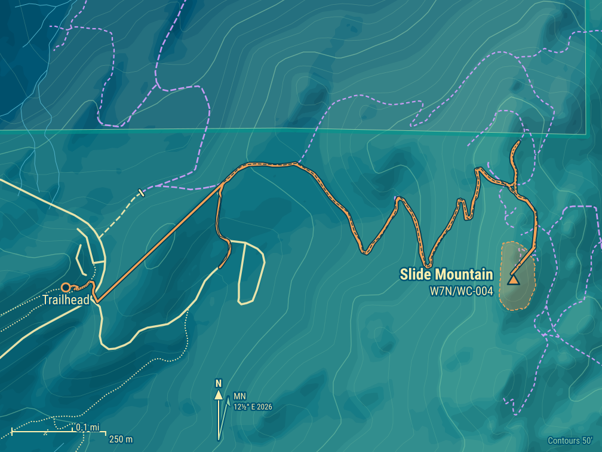
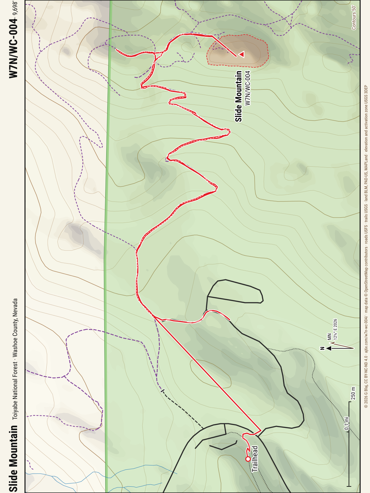
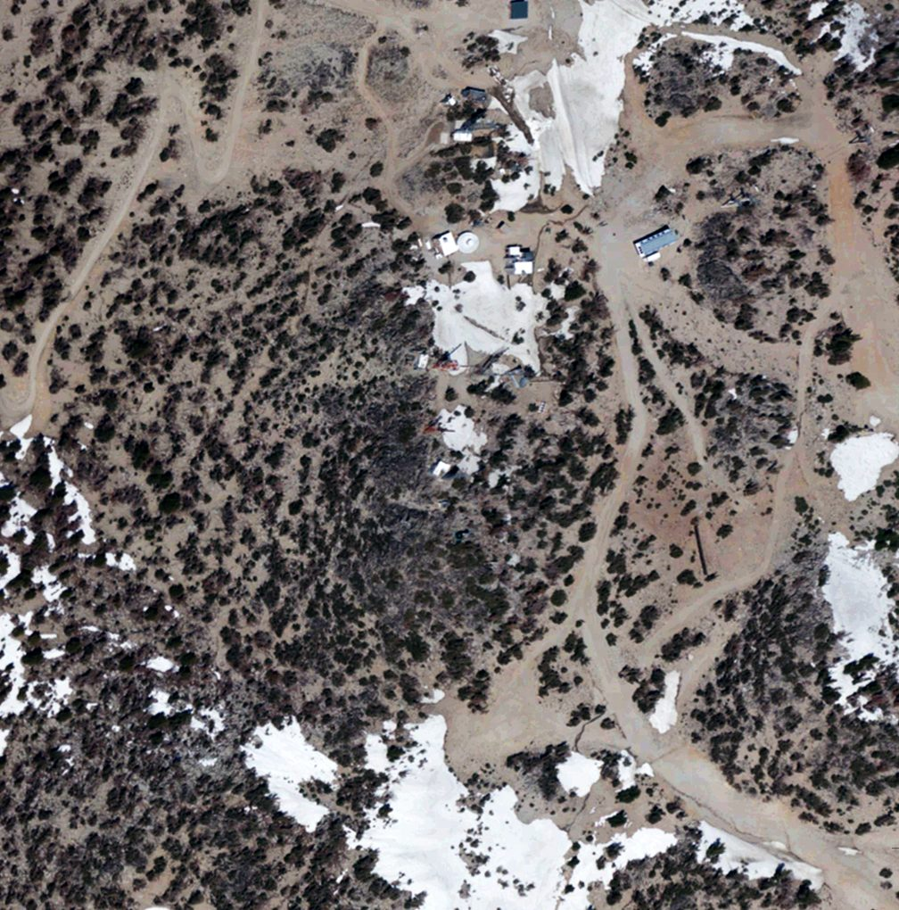
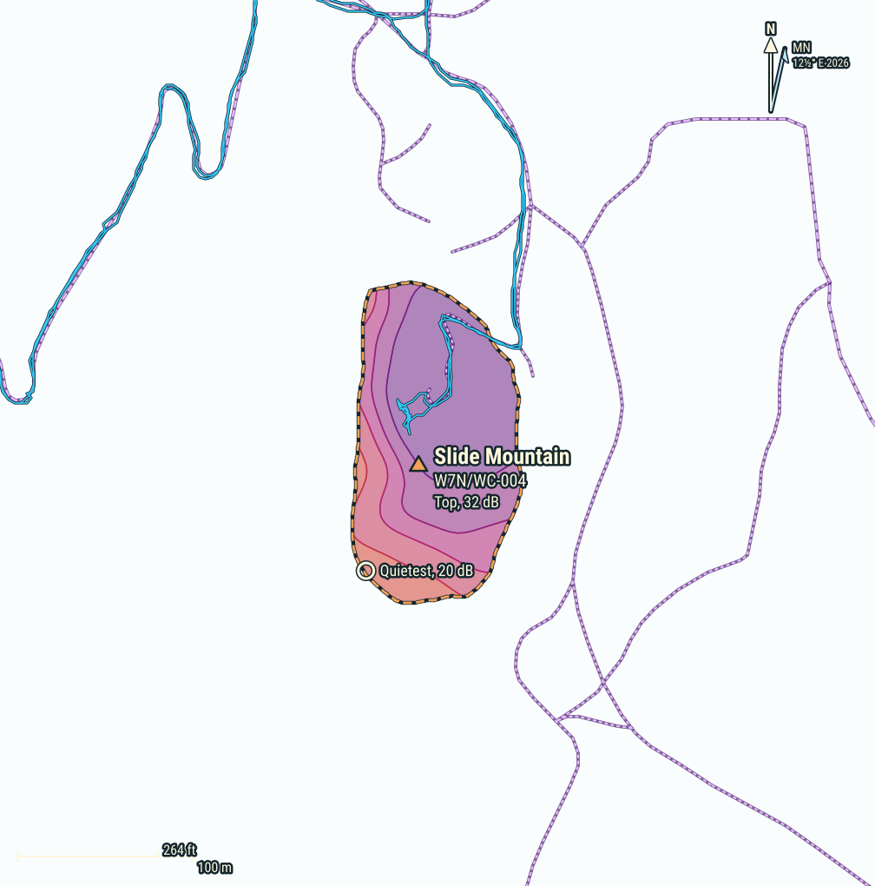
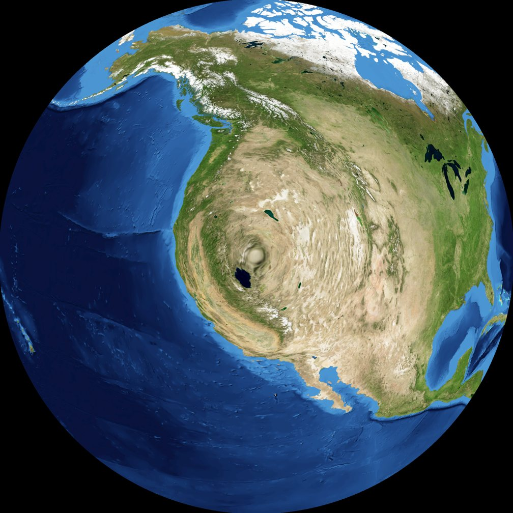
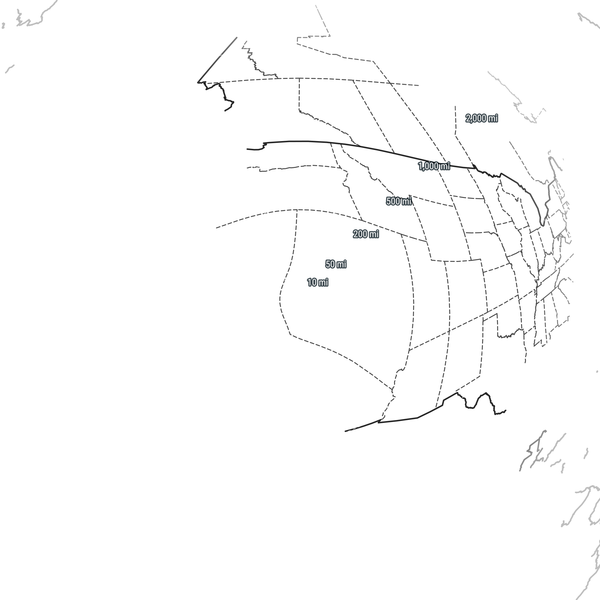

Slide Mountain W7N/WC-004
Summit
- Summit
- W7N/WC-004 · Peakbagger
- Points
- 10
- First activation
- WB0USI, 23 August 2013
- Elevation
- 9,698′ (2,956 m)
- Prominence
- 786′ (240 m)
- Isolation
- 1.8 mi (2.9 km)
- Region
- NV-Washoe County
- County
- Washoe, Nevada
- Grid
- DM09bh
- Land
- Toiyabe National Forest (Forest Service)
- Wilderness
- None
- POTA park
- US-4391 Humboldt-Toiyabe National Forest
Route and radio
- Trailhead
- Mount Rose Summit Trailhead, Mount Rose Highway, 8,950′ (2,728 m)
- Access
- Paved road
- Red tape
- None in summer (winter signs at the road's highway entrance)
- Round trip
- 2.8 mi (4.5 km), 3.5 h
- Elevation gain
- 790′ (241 m)
- Transport
- Service road, Class 1
- Cell service
- Top: all three, good · all the way up
- Towers, power lines
- 15 towers, nearest 5 m NE
RF nearby: 1,114 licensed stations within 30 km
What to bring, the cheapest radio that still works here, on the AJ6X RF scale: HF: rung 4 of 4, go home: nothing works, enjoy the view (thanks to KDOT, FM radio on 104.5 MHz, 60 m NE, 148 dBµV/m). VHF: rung 4 of 4, go home: nothing works, enjoy the view (thanks to WNGV329, public safety on 151.07 MHz, 10 m S, 134 dBµV/m). Pulsing: paging WPKN326 on 929.212 MHz, 260 m S: expect the receiver to blank every few seconds.
| Station | Service | Frequency | ERP | Where | Terrain | dBµV/m |
|---|---|---|---|---|---|---|
| KDOT | FM radio | 104.5 MHz | 39 kW | 0.1 km NE | in sight | 148 |
| KOZZ-FM | FM radio | 105.7 MHz | 39 kW | 0.1 km NE | in sight | 148 |
| KWYL | FM radio | 102.9 MHz | 39 kW | 0.3 km S | in sight | 134 |
| WNGV329 | public safety | 151.07 MHz | 200 W | 0.0 km S | in sight | 134 |
| KRNO | FM radio | 106.9 MHz | 37 kW | 0.3 km S | in sight | 133 |
| WPKJ526 | YE | 856–861 MHz | 200 W | 0.0 km S | in sight | 132 |
| KNCU989 | public safety | 453.3 MHz | 100 W | 0.0 km SE | in sight | 127 |
| WRDF729 | YJ | 855.1–856.9 MHz | 75 W | 0.0 km SE | in sight | 126 |
| KSRN | FM radio | 107.7 MHz | 230 W | 0.1 km NE | in sight | 126 |
| KODS | FM radio | 103.7 MHz | 6.3 kW | 0.3 km S | in sight | 126 |
| KLCA | FM radio | 96.5 MHz | 6.1 kW | 0.3 km S | in sight | 125 |
| WXK58 | NOAA Weather Radio | 162.55 MHz | 300 W | 0.1 km NE | in sight | 124 |
Field strength at the summit from each station's power and distance, less an estimate of the terrain in between. A rough guide, by a rung either way: antenna patterns aren't known, and the noise from a site's equipment is in no licence. Data: FCC licences (2026-10-31), NOAA Weather Radio, OpenStreetMap.
Further down: Map · Aerial photo · QSO map · Log
Cell service, 4G, from the carriers' maps: good fair weak
Slide Mountain is the other easy 10-pointer in Washoe County, next to Tamarack Peak: a short walk up a service road from the pass of the Mount Rose Highway, to a summit covered in towers, with the Mount Rose ski area on its slopes. Easy enough to do both the same day, and we did, in 2023.
Getting there
The hike starts at the Mount Rose Summit Trailhead, on the pass of the Mount Rose Highway (NV-431), at about 8,950′: the same trailhead as for Mount Rose, Tamarack Peak and Mount Houghton, but Slide goes the other way, across the highway. From there it’s Slide Mountain Road, a service road, all the way to the top: about 1.4 miles and 750′ of climbing.
- When: we went in June, August and September. In winter the road is part of the ski area, and I think the top is then only reachable on skis, from the resort; go in summer.
- Water: none.
- Time: about an hour and a quarter up for us, and 40 minutes down.
- Cell service: good on top, on all three carriers.
- Toilets: at the trailhead.
Trailhead
Cross the highway carefully: traffic, a curve, and a slope all make it worse than it looks. Where the road leaves the highway there are some confusing signs. I don’t remember exactly what they say, but they seemed to matter only in winter, when this road is closed for the ski resort. The clean way in is to walk to the right, into the Mount Rose Campground, and out the back of the campground onto the road: no signs posted there in summer. The campground is closed in winter, and probably posted then too.
The way up
The road is well maintained, and climbs steeply all the way to the summit, with some nice views on the way.
Summit
The summit has pretty views. But the high RFI near the antennas and the piles of scrap metal on the ground make it less nice than, say, Tamarack.
On top there’s the upper station of a ski lift, running only in the ski season, and an antenna farm. A maze of roads connects the buildings, and with the slopes it’s not obvious which one goes where. A bit of walking around solves it.
The first two times I walked past the high point, to the south-east. There are gigantic rocks there, and you can find your way down among them to lower ground, still in the activation zone. It makes a large difference in RFI: still high, but it worked. The third time I tried a different spot, before going that far down. That was a mistake: see 2024.


Activations
27 June 2024
- Radio
- Icom IC-705
- Antenna
- 40m EFHW, inverted L
- Power
- 5 W
- Activator
- AJ6X
- QSOs
- 4
- Bands
- 20m (3), 40m (1)
- Modes
- SSB (3), DATA (1)
- On air
- 19:11–19:54 UTC
With the kids. This time I set up before going too far down the other side, and the RFI was so high that SSB barely worked: WB6POT on 40m, then WW7D and W5ODS on 20m, the last one at 33 both ways. I needed a fourth, and got it on FT8, with AI5OS. 4 contacts, from 12:11 PM to 12:54 PM.
A reminder: walk past the summit and down the other side, away from the towers, even if it takes a few more minutes.
8 September 2023
- Radio
- Icom IC-705
- Antenna
- 40m EFHW
- Power
- 5 W
- Activator
- AJ6X
- QSOs
- 7 (1 S2S)
- Bands
- 40m (7)
- Modes
- SSB (7)
- On air
- 01:03–01:09 UTC
- Summit to summit
- W7A/AE-044
The second summit of the day, after Tamarack Peak in the morning. A quick evening activation from the same rocks: 7 contacts on 40m SSB in six minutes, from 6:03 PM, with one S2S, KR7RK on W7A/AE-044 in Arizona. Then down in the last light.
4 August 2022
- Radio
- Icom IC-705
- Antenna
- Quarter-wave vertical (20m and up); 40m EFHW
- Power
- 5 W
- Activator
- AJ6X
- QSOs
- 8 (1 S2S)
- Bands
- 20m (6), 40m (2)
- Modes
- SSB (8)
- On air
- 16:28–17:20 UTC
- Summit to summit
- W7N/WC-003
The first summit of a two-summit day, with Chickadee Ridge in the afternoon. That summer I was trying quarter-wave verticals for 20m and up, with a 40m EFHW for 40m.
A lot of work was going on that day, on the road and on the towers. My friend Rob, K6KM, was on Tamarack Peak next door that morning, and he was my first contact: him on Tamarack, me on Slide, summit to summit. If I remember right, I was still setting up, with the antenna not yet matched and the IC-705 turned down to its minimum power, maybe 0%, and the contact went through anyway. Then Rob walked over to Slide, and on the road up one of the workers offered him a ride in a golf cart! I hadn’t been so lucky: I’d walked up.


On the air at 9:28 AM: six contacts on 20m, three of them in Arizona, then two on 40m, the last one John KI6EAB in Reno. 8 contacts, until 10:20 AM.
That first time, my Rite-in-the-Rain pen fell between two rocks and landed about 3 feet down. No way to grab it. Maybe I should carry a telescopic pickup tool, the kind for fishing screws out of tight spaces. Or just buy a new pen.
And back
The same road down, every time. In the summer.


Map


Cell service, 4G, from the carriers' maps: good fair weak
Aerial photo


QSO map


Azimuthal equidistant, power 0.44 distance scale, out to 4,569 km, centred on the summit: every QSO is a straight line, true in direction. Chasers at their location on QRZ, to about 5 km; summit-to-summit contacts at the other summit. Earth: NASA Blue Marble. Note 2.
Log
27 June 2024 · 4 QSOs
| UTC | Call | Band | Mode |
|---|---|---|---|
| 19:11 | WB6POT | 40m | SSB |
| 19:15 | WW7D | 20m | SSB |
| 19:20 | W5ODS | 20m | SSB |
| 19:54 | AI5OS | 20m | DATA |
8 September 2023 · 7 QSOs · 1 S2S
| UTC | Call | Band | Mode | Summit |
|---|---|---|---|---|
| 01:03 | WB6POT | 40m | SSB | |
| 01:04 | W6DT | 40m | SSB | |
| 01:05 | W6TDX | 40m | SSB | |
| 01:06 | KR7RK S2S | 40m | SSB | W7A/AE-044 |
| 01:08 | K6KM | 40m | SSB | |
| 01:08 | W7DLZ | 40m | SSB | |
| 01:09 | NT6E | 40m | SSB |
4 August 2022 · 8 QSOs · 1 S2S
| UTC | Call | Band | Mode | Summit |
|---|---|---|---|---|
| 16:28 | K6KM S2S | 20m | SSB | W7N/WC-003 |
| 16:31 | W7RV | 20m | SSB | |
| 16:32 | AF7M | 20m | SSB | |
| 16:34 | W5ODS | 20m | SSB | |
| 16:35 | WA7JTM | 20m | SSB | |
| 16:36 | AK5SD | 20m | SSB | |
| 17:20 | KI6EAB | 40m | SSB | |
| 17:20 | WU7H | 40m | SSB |
Notes
- All of the activation zone is on public land or an access easement. RFI, estimated for a Kenwood TH-D75A on 2 m with its stock antenna: about 32 dB of desense at the top, 20 dB at the quietest spot, 80 m south-southwest (the white ring). From FCC licences and the terrain, not measured. Photo: USDA National Agriculture Imagery Program (NAIP), from the USGS National Map · land: BLM Surface Management Agency, PAD-US, MAPLand easements · ways: OpenStreetMap, U.S. Forest Service, USGS · activation zone from USGS 3DEP · RFI: FCC licences over USGS 3DEP
- Azimuthal equidistant, power 0.44 distance scale, out to 4,569 km, centred on the summit: every QSO is a straight line, true in direction. Chasers at their location on QRZ, to about 5 km; summit-to-summit contacts at the other summit. Earth: NASA Blue Marble.